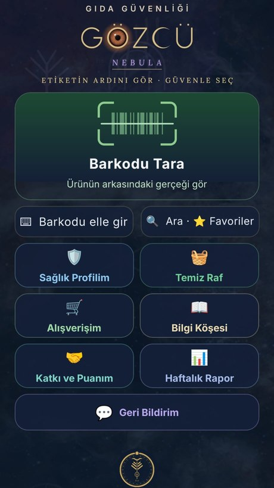
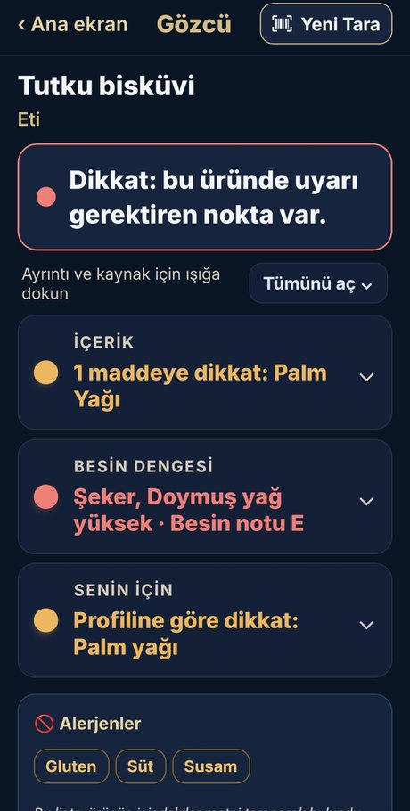
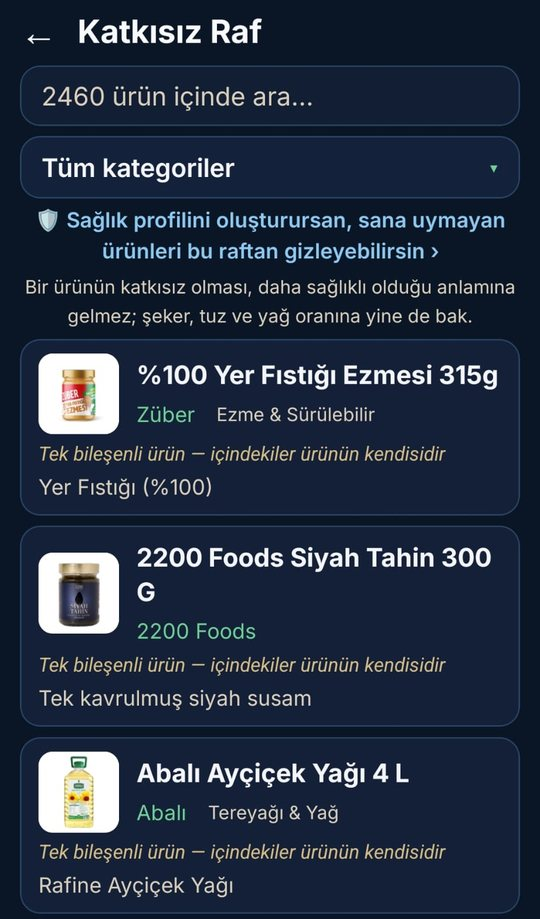

Barkodu okut,
etiketin ardını gör.
Gözcü, gıda ürününün içindekilerini, katkı maddelerini, alerjenlerini ve besin değerlerini resmî kurumların kararlarıyla karşılaştırır ve sonucu üç ışıkla, sade bir dille gösterir.

Nasıl çalışır?


Neler yapabilirsin?
Kendin ve ailen için alerji, hastalık ve kaçındığın katkıları seç; her üründe sana özel uyarı gör.
İçindekilerinde katkı maddesi bulunmayan, tek tek incelenmiş binlerce ürün.
Düzenli aldığın ürünleri listene ekle; içindekileri değişirse Gözcü haber versin.
Şeker, tuz, trans yağ ve katkılar hakkında kaynaklı, anlaşılır bilgiler.
İlkemiz: Yanlış veri, eksik veriden kötüdür
- Kaynaksız bilgi yok: her uyarının yanında dayandığı resmî karar yazılıdır.
- En küçük şüphede elenir: ad, marka ya da gramaj kaynaklar arasında tutmazsa ürün eklenmez; iki kaynak içindekilerde çelişirse o bilgi boş bırakılır.
- Besin değerleri hesapla denetlenir: enerji ile yağ, karbonhidrat ve protein birbirini tutmuyorsa değer gösterilmez.
- Emin değilsek "temiz" demeyiz: içindekiler eksikse, yabancı dildeyse ya da tanınmayan bir katkı varsa ışık gri veya sarı yanar.
- Sağlık bilgin telefonunda kalır: hiçbir yere gönderilmez.
Dayandığımız kaynaklar
Sık sorulan sorular
Gözcü ücretli mi, reklam var mı?
Hayır. Gözcü ücretsizdir ve reklam göstermez. Hiçbir üretici, marka veya marketle ticari ilişkisi yoktur; listelerde yer almak ya da sıralama için ücret alınmaz.
Sağlık bilgilerim nereye gidiyor?
Hiçbir yere. Sağlık Profilim'de seçtiğin bilgiler yalnız telefonunda saklanır, sunucuya gönderilmez. Ayrıntılar Gizlilik sayfasında.
Taradığım ürün bulunamazsa ne olur?
Ambalajın fotoğrafını çekip gönderebilirsin. Gönderilen bilgiler incelenip doğrulandıktan sonra ürün Gözcü'ye eklenir.
Gözcü bir ürünün "zararlı" olduğunu mu söylüyor?
Hayır. Gözcü ambalajda beyan edilen içeriği resmî kurum kararlarıyla karşılaştırır; ürün ya da üretici hakkında bir hüküm vermez ve tıbbi tavsiye değildir. Ambalajdaki bilgi esastır.
Uygulamayı nereden indirebilirim?
Gözcü Nebula yakında Google Play'de olacak. Duyurular bu sayfada yayımlanacak.
Ürünlerinizin etiket bilgisini ücretsiz iletebilirsiniz; çok ürününüz varsa toplu gönderebilirsiniz.
Üreticiler için
Gözcü bilgi amaçlıdır; tıbbi tavsiye, teşhis ya da tedavi yerine geçmez. Gıdada sağlığı tehdit eden bir durumdan şüphelenirsen ALO 174 Gıda Hattı'na bildir.